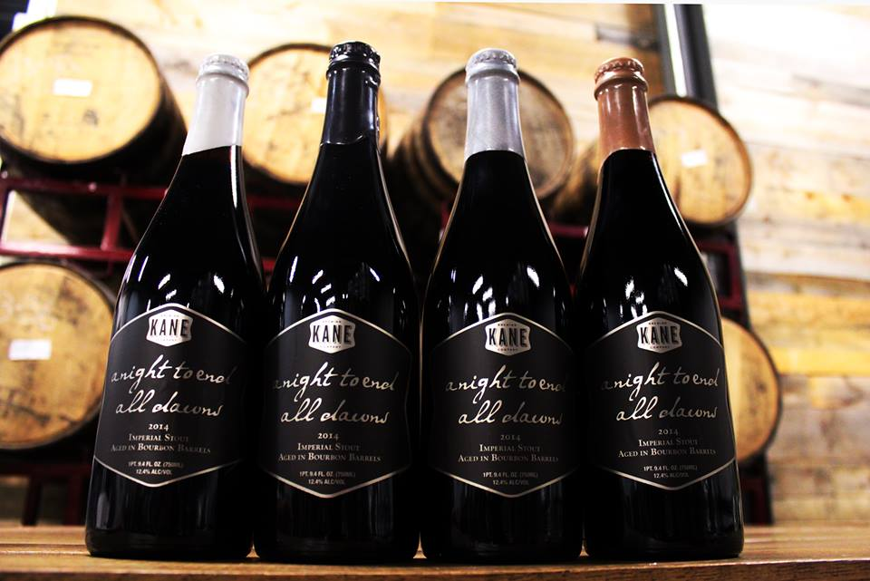

A NIGHT TO END ALL DAWNS STOUT
HOME
STOUTS
A Night to End All Dawns
Kane Brewing Company
A massive imperial stout aged an inordinately long time in oak bourbon barrels (15 months), becomes a transformed beer. In this case, the bold roasty flavors of dark malts and roasted barley are softened, the sweetness and heat of the fresh bourbon evolve into a surprisingly smooth complement, and the oak starts to go to work. Vanilla and earthy tannins overlay what remains of the original stout flavors for a unique experience.
Kane Brewing Company is located in Ocean, New Jersey.
Check out their site HERE 